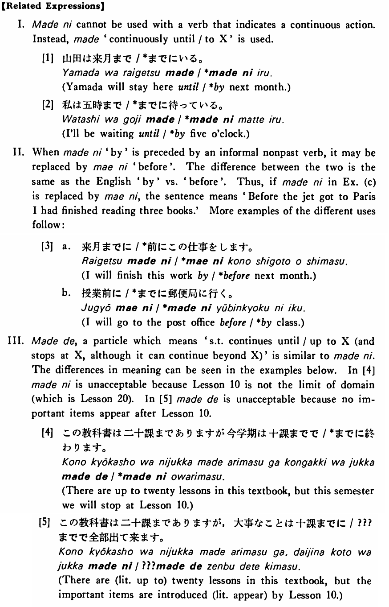

←
DoJG
→
までに
(B. 228)
Example sentences
(ksa).
私は十時
までに
帰る・帰ります。
I'll come home by 10 o'clock.
(ksb).
学校が始まる
までに
この本を読んでおいて下さい。
Please read this book (in advance) by the time school starts.
(a).
A:何時
までに
空港に行けばいいでしょうか。 B:出発の一時間前
までに
来て下さい。
A: By what time should I go to the airport? B: Please come one hour before departure.
(b).
僕はこのレポートを一月二十日
までに
書き上げなければならないんだ。
I have to finish writing this paper by January 20.
(c).
ジェット機がパリに着く
までに
本を三冊読んでしまいました。
By the time the jet got to Paris, I had finished reading three books.
Formation
(i)
Noun (time)
までに
五時
までに
By five o’clock
明日
までに
By tomorrow
(ii)
Vinformal nonpast
までに
話す
までに
By the time someone talks/talked
食べる
までに
By the time someone eats/ate
